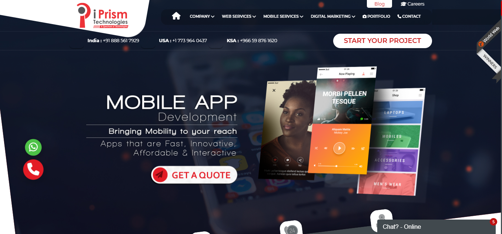
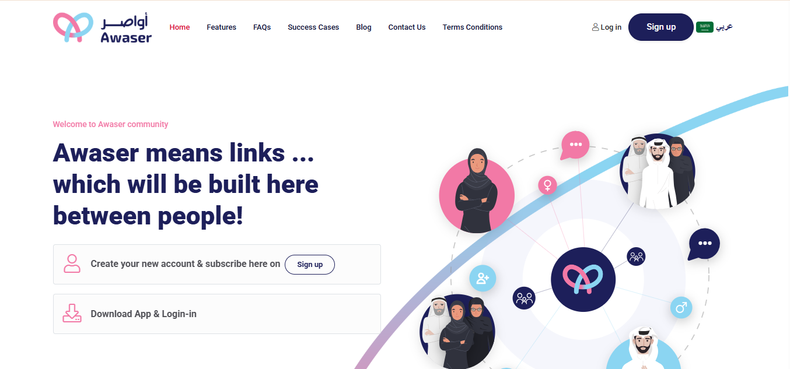
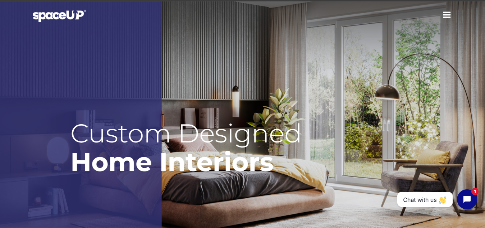
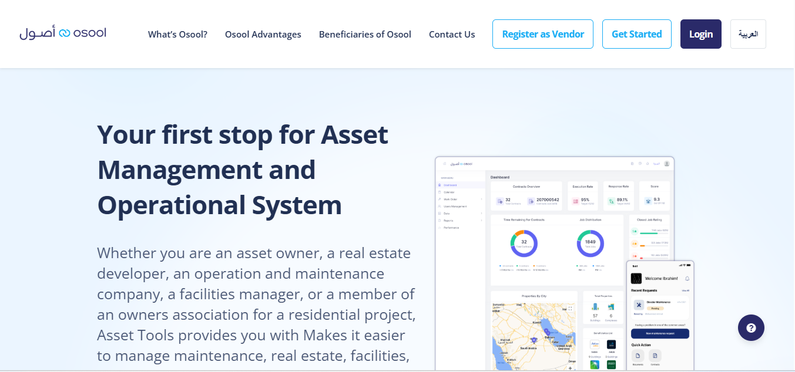
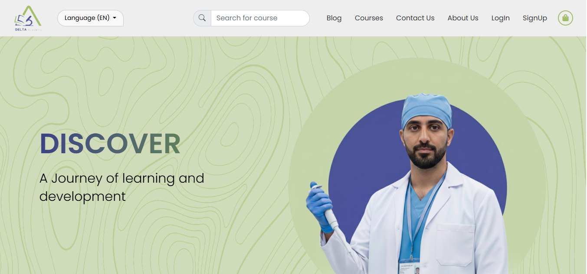

I build interfaces that feel alive.
9+ years turning designs and business requirements into polished, responsive and production-ready web experiences using HTML, CSS/SCSS, JavaScript, jQuery, Bootstrap and Tailwind CSS.
const developer = {
role: "UI Developer",
experience: 9+,
loves: [
"Clean UI",
"Micro-interactions",
"Responsive UX"
],
stack: "HTML / SCSS / JS"
};Good UI is felt
before it's noticed.
I focus on the things that make interfaces feel finished: hierarchy, spacing, responsiveness, states, motion and the details users interact with every day.
Design-minded development.
I enjoy taking a static design or a complex requirement and turning it into a clean, usable interface. My work spans business dashboards, forms, tables, workflows, charts, responsive layouts and reusable UI patterns.
A toolbox built
through real projects.
My stack is broad enough to adapt, but grounded in hands-on UI development.
HTML5
Semantic structure, accessibility and maintainable page architecture.
CSS / SCSS
Grid, Flexbox, responsive layouts, animation and scalable styling.
JavaScript
DOM, events, dynamic UI, validation, state and API-driven interactions.
jQuery
Production UI, plugins, AJAX, forms and application maintenance.
Bootstrap 4 / 5
Grid systems, utilities, components, RTL and custom design systems.
Tailwind CSS
Utility-first responsive interfaces and rapid custom UI development.
Laravel / Livewire
UI development inside server-rendered and backend-driven applications.
UI Libraries
Chart.js, FullCalendar, Select2, jQuery UI and interactive components.
Real work,
not just mockups.
Five projects are now featured. We'll keep expanding this section as you send more projects, screenshots and live links.

iPrism Technologies
Corporate technology and digital services website. Added as the first organization in the portfolio; project details and your exact contribution will be expanded as you provide them.

Awaser
Awaser community platform with a clean, modern interface and Arabic/English experience. Added as the second organization in the portfolio.

SpaceUp
A responsive home-interiors website focused on showcasing custom-designed living spaces through a bold, image-led user experience and clean frontend presentation.

Osool Cloud
A facility and asset management platform with role-based dashboards and workflows for property developers, facility managers, maintenance companies and owner associations. I led the responsive UI development, including operational dashboards, KPI reporting, work orders, contracts, inspections, inventory interfaces and bilingual RTL/LTR experiences.

Delta Academy
A scalable healthcare e-learning platform designed for browsing and accessing 300+ professional development courses. I led the UI/UX and frontend development, creating responsive course discovery, enrollment, profile and content-access flows with Arabic/English and RTL/LTR support.
Send me your next screenshot, live link and what you worked on — we'll turn it into another case study.
Built through
years of shipping UI.
We'll replace the placeholders below with your exact companies, dates, responsibilities and achievements.
Senior UI Developer
Beyondtech IT Solutions
10/2001 - PresentProduction UI development, responsive layouts, reusable components, forms, dashboards and application workflows.
UI Developer
iPrismtech Pvt Ltd
06/2017 – 10/2021Responsive pages, business interfaces, component work and front-end implementation across web applications.
Let's build something
people enjoy using.
Open to UI development opportunities, freelance work and interesting products.